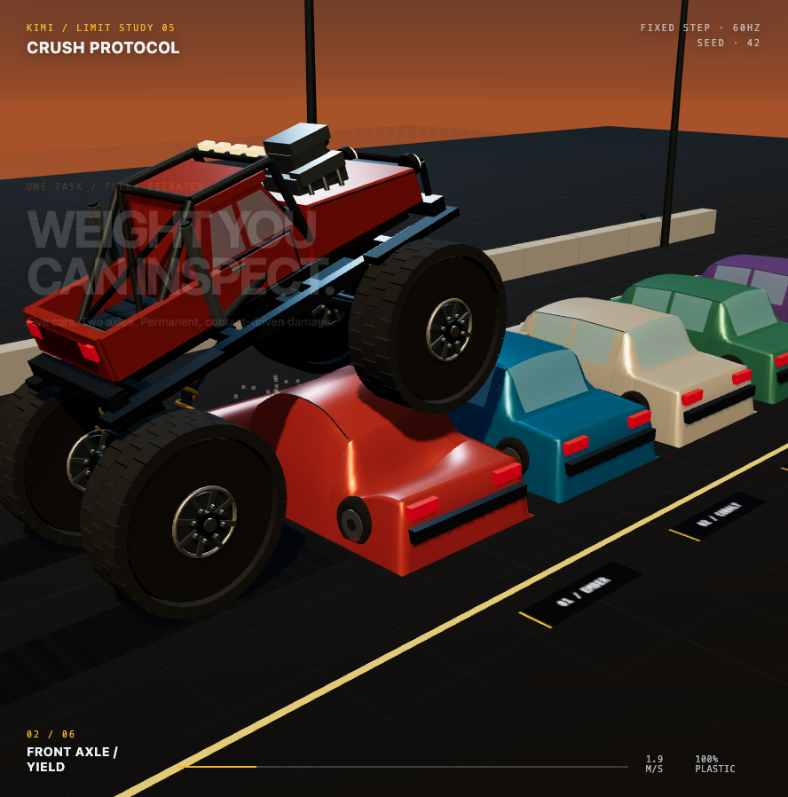
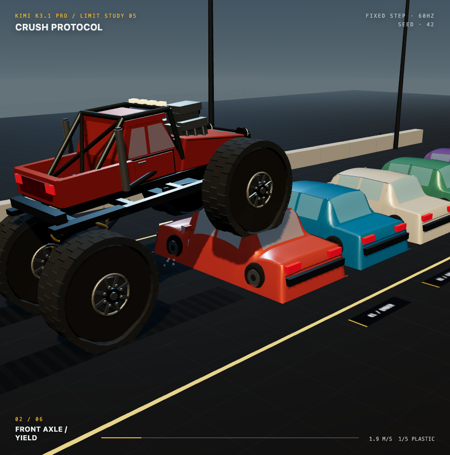
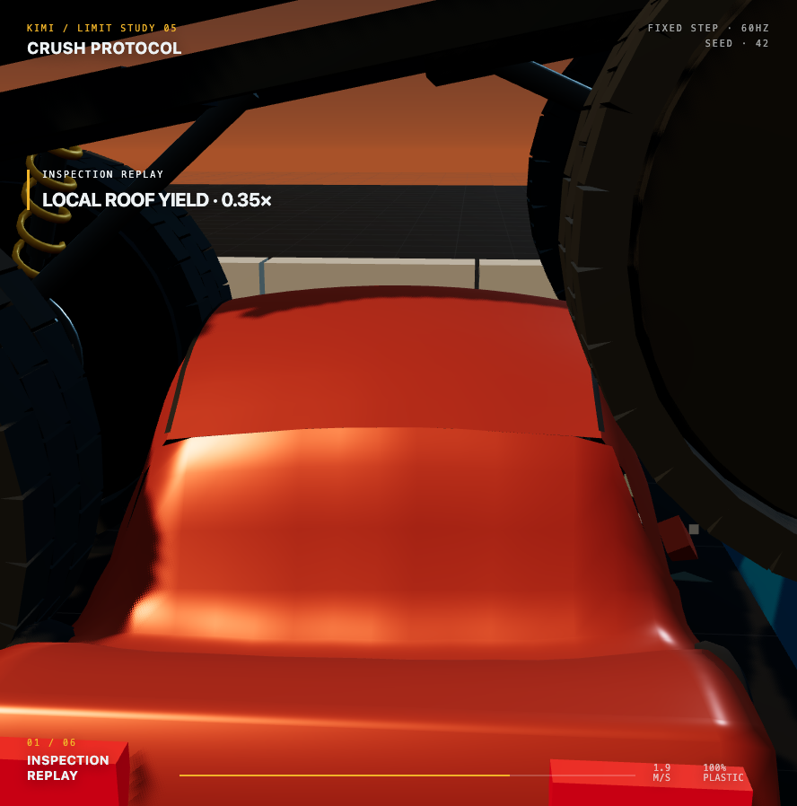
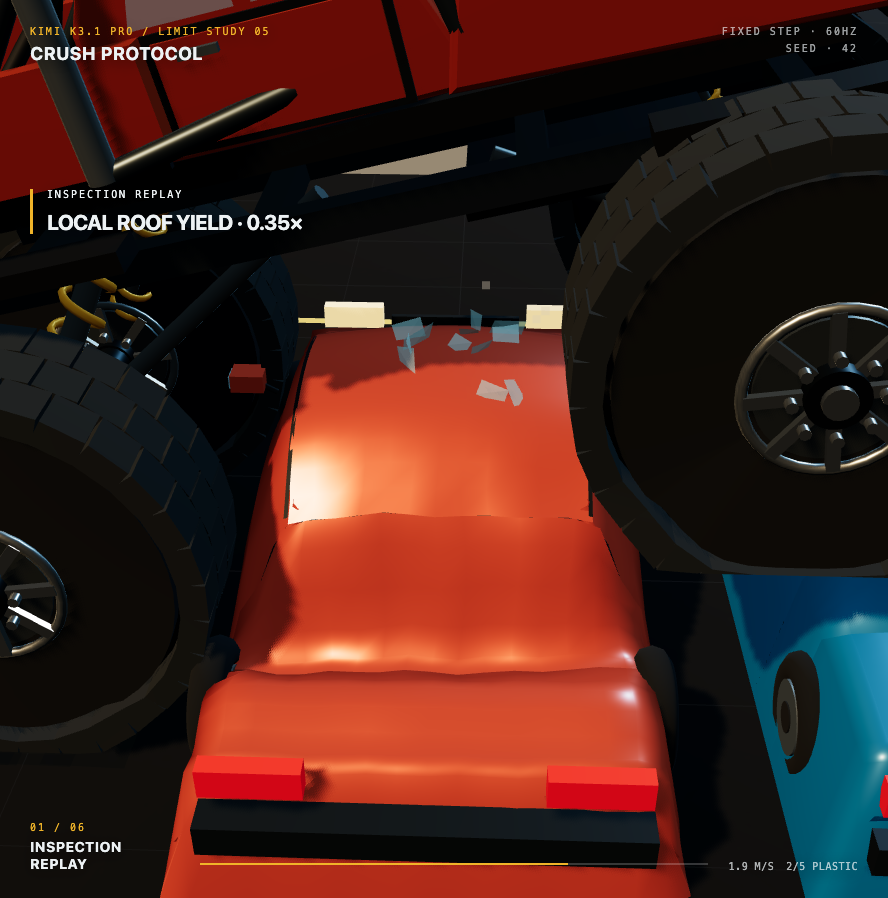

SB—04 · Improvement archive
Improvement,
with receipts.
Vehicle Physics Trio · 小车、火车物理碰撞
Verified iteration
Starting point
The initial Monster Truck build already had driving, suspension and procedural vehicle damage. The archive preserves its source and QC captures, followed by a seven-iteration refinement log and a final R7 build.
Evidence standard: Source snapshots, technical logs and/or measurable checks


The final pass improves ground contact, body alignment and the readability of the crush.


Shared damage fields and additional geometric refinement make roof deformation more coherent.
Refinement sequence
What changed
6 documented implementation or specification improvements.
- 01
Contact geometry matches the visible car
Removed a uniform residual ride height and sampled local undeformed body height so the collision surface no longer hovered above the visible contact edge.
- 02
Camera and HUD become more readable
Added a wide wreckage view, corrected slow-motion framing and removed CSS ghosting during timeline jumps. The final composition keeps the truck and five damaged cars legible.
- 03
One coherent damage field
Side, end and roof surfaces now read the same damage field. Local creases, clearcoat and fill light make deformation visible instead of hidden between panels.
- 04
Physics and replay correctness
Damage is driven by actual ground travel and load. Attachments inherit local damage, debris receives approximate vehicle/tire collisions, and duplicate timeline events no longer contaminate deterministic replay.
- 05
Resource cleanup across resets
Replacement vehicles and debris explicitly release GPU resources. Geometry and texture counts remain stable in the final reset test instead of growing per cycle.
- 06
R7 tire contact and flattening
Support sampling increased from 5 to 21 points. Load-dependent tire flattening, sidewall bulging and deformed-geometry contact reports improved the final crush pose.
Evidence boundary
The simulation mixes vehicle dynamics, suspension support and procedural plastic deformation; it is not a full soft-body or node-beam solver. The recorded soak is about 30 seconds and does not prove long-term stability on every device. Not every intermediate source snapshot was retained.